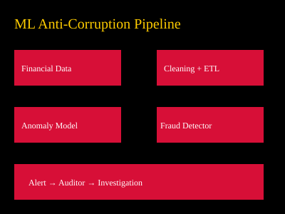

PNG Corruption Analysis Dashboard
Visual mockup of what a national ML anti-corruption system could look like.
Home
Weekly Blog
Dashboard
ML Solutions
About
Dashboard Mockup
🔥 Real-time suspicious transaction alerts
🔥 Province-by-province corruption heatmap
🔥 Government spending anomaly detector
🔥 Vendor fraud risk scoring system
